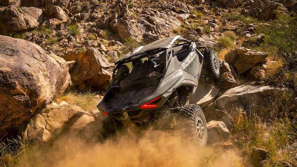

Cennik
Aktualne cenniki pojazdów
Pobierz aktualny cennik PDF dla wybranej kategorii pojazdów Sea-Doo i Can-Am.

Dokument PDF
Sea-Doo — skutery wodne
Pełny cennik modeli Spark, GTI, GTX, RXP-X, RXT-X i innych.
Pobierz cennik
Dokument PDF
Can-Am — quady ATV
Outlander, Outlander MAX, Renegade oraz wersje 6x6.
Pobierz cennik
Dokument PDF
Can-Am — SSV
Maverick, Maverick R oraz Traxter — pojazdy side-by-side.
Pobierz cennik
Dokument PDF
Can-Am — trójkołowce
Spyder F3, Spyder RT, Canyon oraz Ryker.
Pobierz cennik